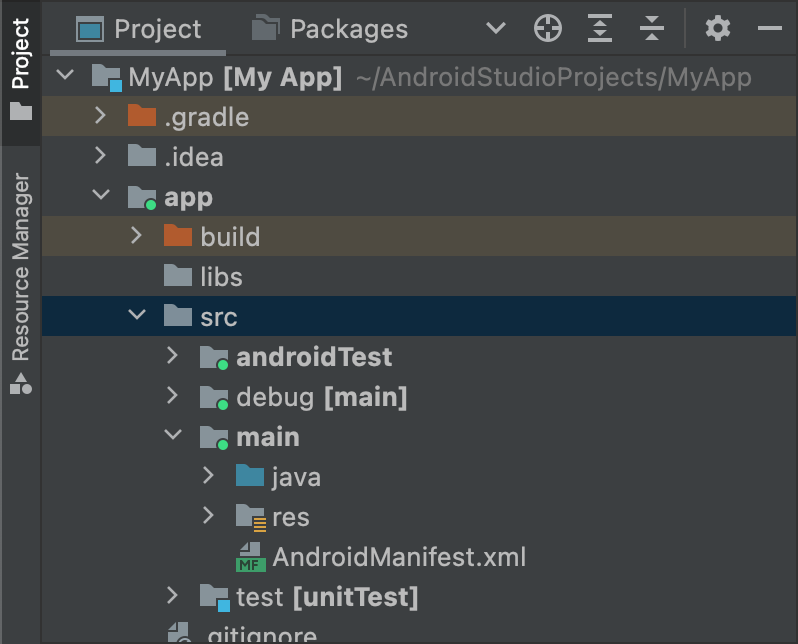

This page shows you how you can configure build variants to create different versions of your app from a single project and how to properly manage your dependencies and signing configurations.
Each build variant represents a different version of your app that you can build. For example, you might want to build one version of your app that's free with a limited set of content, and another paid version that includes more. You can also build different versions of your app that target different devices, based on API level or other device variations.
Build variants are the result of Gradle using a specific set of rules to combine settings, code, and resources configured in your build types and product flavors. Although you don't configure build variants directly, you do configure the build types and product flavors that form them.
For example, a "demo" product flavor might specify certain features
and device requirements, such as custom source code, resources, and minimum
API levels, while the "debug" build type applies different build and
packaging settings, such as debug options and signing keys. The
build variant that combines these two is the "demoDebug" version of your app, and it includes a
combination of the configurations and resources included in the "demo"
product flavor, "debug" build type, and main/ source set.
Configure build types
You can create and configure build types inside the android
block of the module-level build.gradle.kts file. When you create
a new module, Android Studio automatically creates the debug and release build
types. Although the debug build type doesn't appear in the build configuration
file, Android Studio configures it with debuggable
true. This lets you debug the app on secure Android devices and
configures app signing with a generic debug keystore.
You can add the debug build type to your configuration if you want to add
or change certain settings. The following sample specifies an
applicationIdSuffix for the debug build type and configures
a "staging" build type that is initialized using settings from the debug build type:
Kotlin
android {
defaultConfig {
manifestPlaceholders["hostName"] = "www.example.com"
...
}
buildTypes {
getByName("release") {
isMinifyEnabled = true
proguardFiles(getDefaultProguardFile("proguard-android.txt"), "proguard-rules.pro")
}
getByName("debug") {
applicationIdSuffix = ".debug"
isDebuggable = true
}
/**
* The `initWith` property lets you copy configurations from other build types,
* then configure only the settings you want to change. This one copies the debug build
* type, and then changes the manifest placeholder and application ID.
*/
create("staging") {
initWith(getByName("debug"))
manifestPlaceholders["hostName"] = "internal.example.com"
applicationIdSuffix = ".debugStaging"
}
}
}Groovy
android {
defaultConfig {
manifestPlaceholders = [hostName:"www.example.com"]
...
}
buildTypes {
release {
minifyEnabled true
proguardFiles getDefaultProguardFile('proguard-android.txt'), 'proguard-rules.pro'
}
debug {
applicationIdSuffix ".debug"
debuggable true
}
/**
* The `initWith` property lets you copy configurations from other build types,
* then configure only the settings you want to change. This one copies the debug build
* type, and then changes the manifest placeholder and application ID.
*/
staging {
initWith debug
manifestPlaceholders = [hostName:"internal.example.com"]
applicationIdSuffix ".debugStaging"
}
}
}Note: When you make changes to a build configuration file, Android Studio requires that you sync your project with the new configuration. To sync your project, click Sync Now in the notification bar that appears when you make a change or click Sync Project from the toolbar. If Android Studio notices any errors with your configuration, the Messages window appears to describe the issue.
To learn more about all the properties you can configure with build types,
read the
BuildType reference.
Configure product flavors
Creating product flavors is similar to creating build types. Add product flavors to the
productFlavors block in your build configuration and include the settings you want.
The product flavors support the same properties as
defaultConfig, because defaultConfig
actually belongs to the
ProductFlavor class. This means you can provide the base
configuration for all flavors in the defaultConfig block, and
each flavor can change any of these default values, such as the applicationId. To
learn more about the application ID, read
Set the application ID.
Note: You still need to specify a package name using the
package
attribute in the main/ manifest file. You must also use that
package name in your source code to refer to the R class or to resolve any
relative activity or service registration. This lets you use
applicationId to give each product flavor a unique ID for
packaging and distribution without having to change your source code.
All flavors must belong to a named flavor dimension, which is a group of product flavors. You must assign all flavors to a flavor dimension; otherwise, you will get the following build error.
Error: All flavors must now belong to a named flavor dimension.
The flavor 'flavor_name' is not assigned to a flavor dimension.
If a given module specifies only one flavor dimension, the Android Gradle plugin automatically assigns all of the module's flavors to that dimension.
The following code sample creates a flavor dimension named "version" and adds
"demo" and "full" product flavors. These flavors provide their own
applicationIdSuffix and
versionNameSuffix:
Kotlin
android {
...
defaultConfig {...}
buildTypes {
getByName("debug"){...}
getByName("release"){...}
}
// Specifies one flavor dimension.
flavorDimensions += "version"
productFlavors {
create("demo") {
// Assigns this product flavor to the "version" flavor dimension.
// If you are using only one dimension, this property is optional,
// and the plugin automatically assigns all the module's flavors to
// that dimension.
dimension = "version"
applicationIdSuffix = ".demo"
versionNameSuffix = "-demo"
}
create("full") {
dimension = "version"
applicationIdSuffix = ".full"
versionNameSuffix = "-full"
}
}
}Groovy
android {
...
defaultConfig {...}
buildTypes {
debug{...}
release{...}
}
// Specifies one flavor dimension.
flavorDimensions "version"
productFlavors {
demo {
// Assigns this product flavor to the "version" flavor dimension.
// If you are using only one dimension, this property is optional,
// and the plugin automatically assigns all the module's flavors to
// that dimension.
dimension "version"
applicationIdSuffix ".demo"
versionNameSuffix "-demo"
}
full {
dimension "version"
applicationIdSuffix ".full"
versionNameSuffix "-full"
}
}
}
Note: If you have a legacy app (created before
August 2021) that you distribute using APKs on Google Play, to distribute your app using multiple APK
support in Google Play, assign the same applicationId value
to all variants and give each variant a different
versionCode. To distribute
different variants of your app as separate apps in Google Play, you need to assign a
different applicationId to each variant.
After you create and configure your product flavors, click Sync
Now in the notification bar. Once the sync completes, Gradle
automatically creates build variants based on your build types and product
flavors and names them according to
<product-flavor><Build-Type>. For example, if you
created "demo" and "full" product flavors, and kept the default
"debug" and
"release" build types, Gradle creates the following build variants:
-
demoDebug -
demoRelease -
fullDebug -
fullRelease
To select which build variant to build and run, go to Build > Select Build Variant and select a build variant from the menu. To start customizing each build variant with its own features and resources, you'll need to create and manage source sets, as described on this page.
Change the application ID for build variants
When you build an APK or AAB for your app, the build tools tag the app with the
application ID defined in the defaultConfig block from the build.gradle.kts
file, as shown in the following example. However, if you want to create different versions of your
app to appear as separate listings on Google Play Store, such as a "free" and "pro"
version, you need to create separate
build variants that each have a different
application ID.
In this case, define each build variant as a separate
product flavor. For each flavor
inside the productFlavors block, you can redefine the applicationId
property, or you can instead append a segment to the default application ID
using applicationIdSuffix, as shown here:
Kotlin
android {
defaultConfig {
applicationId = "com.example.myapp"
}
productFlavors {
create("free") {
applicationIdSuffix = ".free"
}
create("pro") {
applicationIdSuffix = ".pro"
}
}
}Groovy
android {
defaultConfig {
applicationId "com.example.myapp"
}
productFlavors {
free {
applicationIdSuffix ".free"
}
pro {
applicationIdSuffix ".pro"
}
}
}This way, the application ID for the "free" product flavor is "com.example.myapp.free".
You can also use applicationIdSuffix to append a segment based on
your build type, as shown here:
Kotlin
android {
...
buildTypes {
getByName("debug") {
applicationIdSuffix = ".debug"
}
}
}Groovy
android {
...
buildTypes {
debug {
applicationIdSuffix ".debug"
}
}
}Because Gradle applies the build type configuration after the product flavor, the application ID for the "free debug" build variant is "com.example.myapp.free.debug". This is useful when you want to have both the debug and the release build on the same device, because no two apps can have the same application ID.
If you have a legacy app (created before August
2021) that you distribute using APKs on Google Play, and you want to use the same app listing to
distribute multiple APKs that
each target a different device configuration, such as the API level,
then you must use the same application ID for each build variant but give each
APK a different versionCode. For more information, read about
Multiple APK support. Publishing
using AABs is unaffected, as it uses a single artifact that uses a single
version code and application ID by default.
Tip: If you need to reference the application ID in your
manifest file, you can use the ${applicationId} placeholder in any
manifest attribute. During a build, Gradle replaces this tag with the actual
application ID. For more information, see Inject build
variables into the manifest.
Combine multiple product flavors with flavor dimensions
In some cases, you may want to combine configurations from multiple product flavors. For example, you may want to create different configurations for the "full" and "demo" product flavors that are based on API level. To do this, the Android Gradle plugin lets you create multiple groups of product flavors as flavor dimensions.
When building your app, Gradle combines a product flavor configuration from each flavor dimension you define, along with a build type configuration, to create the final build variant. Gradle doesn't combine product flavors that belong to the same flavor dimension.
The following code sample uses the
flavorDimensions property to create a "mode" flavor
dimension to group the "full" and "demo" product flavors and an "api" flavor
dimension to group product flavor configurations based on API level:
Kotlin
android {
...
buildTypes {
getByName("debug") {...}
getByName("release") {...}
}
// Specifies the flavor dimensions you want to use. The order in which you
// list the dimensions determines their priority, from highest to lowest,
// when Gradle merges variant sources and configurations. You must assign
// each product flavor you configure to one of the flavor dimensions.
flavorDimensions += listOf("api", "mode")
productFlavors {
create("demo") {
// Assigns this product flavor to the "mode" flavor dimension.
dimension = "mode"
...
}
create("full") {
dimension = "mode"
...
}
// Configurations in the "api" product flavors override those in "mode"
// flavors and the defaultConfig block. Gradle determines the priority
// between flavor dimensions based on the order in which they appear next
// to the flavorDimensions property, with the first dimension having a higher
// priority than the second, and so on.
create("minApi24") {
dimension = "api"
minSdk = 24
// To ensure the target device receives the version of the app with
// the highest compatible API level, assign version codes in increasing
// value with API level.
versionCode = 30000 + (android.defaultConfig.versionCode ?: 0)
versionNameSuffix = "-minApi24"
...
}
create("minApi23") {
dimension = "api"
minSdk = 23
versionCode = 20000 + (android.defaultConfig.versionCode ?: 0)
versionNameSuffix = "-minApi23"
...
}
create("minApi21") {
dimension = "api"
minSdk = 21
versionCode = 10000 + (android.defaultConfig.versionCode ?: 0)
versionNameSuffix = "-minApi21"
...
}
}
}
...Groovy
android {
...
buildTypes {
debug {...}
release {...}
}
// Specifies the flavor dimensions you want to use. The order in which you
// list the dimensions determines their priority, from highest to lowest,
// when Gradle merges variant sources and configurations. You must assign
// each product flavor you configure to one of the flavor dimensions.
flavorDimensions "api", "mode"
productFlavors {
demo {
// Assigns this product flavor to the "mode" flavor dimension.
dimension "mode"
...
}
full {
dimension "mode"
...
}
// Configurations in the "api" product flavors override those in "mode"
// flavors and the defaultConfig block. Gradle determines the priority
// between flavor dimensions based on the order in which they appear next
// to the flavorDimensions property, with the first dimension having a higher
// priority than the second, and so on.
minApi24 {
dimension "api"
minSdkVersion 24
// To ensure the target device receives the version of the app with
// the highest compatible API level, assign version codes in increasing
// value with API level.
versionCode 30000 + android.defaultConfig.versionCode
versionNameSuffix "-minApi24"
...
}
minApi23 {
dimension "api"
minSdkVersion 23
versionCode 20000 + android.defaultConfig.versionCode
versionNameSuffix "-minApi23"
...
}
minApi21 {
dimension "api"
minSdkVersion 21
versionCode 10000 + android.defaultConfig.versionCode
versionNameSuffix "-minApi21"
...
}
}
}
...The number of build variants Gradle creates is equal to the product of the number of flavors in each flavor dimension and the number of build types you configure. When Gradle names each build variant or corresponding artifacts, product flavors belonging to higher-priority flavor dimension appear first, followed by those from lower-priority dimensions, followed by the build type.
Using the previous build configuration as an example, Gradle creates a total of 12 build variants with the following naming scheme:
- Build variant:
[minApi24, minApi23, minApi21][Demo, Full][Debug, Release] - Corresponding APK:
app-[minApi24, minApi23, minApi21]-[demo, full]-[debug, release].apk - For example,
- Build variant:
minApi24DemoDebug - Corresponding APK:
app-minApi24-demo-debug.apk
In addition to the source set directories you can create for each individual
product flavor and build variant, you can also create source set directories
for each combination of product flavors. For example, you can create
and add Java sources to the src/demoMinApi24/java/ directory,
and Gradle uses those sources only when building a variant that combines
those two product flavors.
Source sets you create for product flavor combinations have a higher priority than source sets that belong to each individual product flavor. To learn more about source sets and how Gradle merges resources, read the section about how to create source sets.
Filter variants
Gradle creates a build variant for every possible combination of the product
flavors and build types that you configure. However, there may be certain
build variants that you don't need or that don't make sense in the
context of your project. To remove certain build variant configurations,
create a variant filter in your module-level build.gradle.kts
file.
Using the build configuration from the previous section as an example,
suppose you plan to support only API levels 23 and higher for the demo
version of the app. You can use the
variantFilter block to filter out all build variant
configurations that combine the "minApi21" and "demo" product flavors:
Kotlin
android {
...
buildTypes {...}
flavorDimensions += listOf("api", "mode")
productFlavors {
create("demo") {...}
create("full") {...}
create("minApi24") {...}
create("minApi23") {...}
create("minApi21") {...}
}
}
androidComponents {
beforeVariants { variantBuilder ->
// To check for a certain build type, use variantBuilder.buildType == "<buildType>"
if (variantBuilder.productFlavors.containsAll(listOf("api" to "minApi21", "mode" to "demo"))) {
// Gradle ignores any variants that satisfy the conditions above.
variantBuilder.enable = false
}
}
}
...Groovy
android {
...
buildTypes {...}
flavorDimensions "api", "mode"
productFlavors {
demo {...}
full {...}
minApi24 {...}
minApi23 {...}
minApi21 {...}
}
variantFilter { variant ->
def names = variant.flavors*.name
// To check for a certain build type, use variant.buildType.name == "<buildType>"
if (names.contains("minApi21") && names.contains("demo")) {
// Gradle ignores any variants that satisfy the conditions above.
setIgnore(true)
}
}
}
...Once you add a variant filter to your build configuration and click Sync Now in the notification bar, Gradle ignores any build variants that meet the conditions you specify. The build variants no longer appear in the menu when you click Build > Select Build Variant from the menu bar or Build Variants in the tool window bar.
Create source sets
By default, Android Studio creates the main/
source set and directories for
everything you want to share between all your build variants. However, you
can create new source sets to control exactly which files Gradle compiles and
packages for specific build types, product flavors, combinations of
product flavors (when using flavor
dimensions), and build variants.
For example, you can define basic
functionality in the main/ source set and use product flavor
source sets to change the branding of your app for different clients, or
include special permissions and logging functionality only for build variants
that use the debug build type.
Gradle expects source set files and directories to be organized in a certain
way, similar to the main/ source set. For example, Gradle
expects Kotlin or Java class files that are specific to your "debug" build type to be
located in the src/debug/kotlin/ or src/debug/java/ directories.
The Android Gradle plugin provides a useful Gradle task that shows you how to organize your files for each of your build types, product flavors, and build variants. For example, the following sample from the task output describes where Gradle expects to find certain files for the "debug" build type:
------------------------------------------------------------
Project :app
------------------------------------------------------------
...
debug
----
Compile configuration: debugCompile
build.gradle name: android.sourceSets.debug
Java sources: [app/src/debug/java]
Kotlin sources: [app/src/debug/kotlin, app/src/debug/java]
Manifest file: app/src/debug/AndroidManifest.xml
Android resources: [app/src/debug/res]
Assets: [app/src/debug/assets]
AIDL sources: [app/src/debug/aidl]
RenderScript sources: [app/src/debug/rs]
JNI sources: [app/src/debug/jni]
JNI libraries: [app/src/debug/jniLibs]
Java-style resources: [app/src/debug/resources]
To view this output, proceed as follows:
- Click Gradle in the tool window bar.
Navigate to MyApplication > Tasks > android and double-click sourceSets.
To see the Tasks folder, you must let Gradle build the task list during sync. To do so, follow these steps:
- Click File > Settings > Experimental (Android Studio > Settings > Experimental on macOS).
- Deselect Do not build Gradle task list during Gradle sync.
- After Gradle executes the task, the Run window opens to display the output.
Note: The task output also shows you how to organize source sets
for files you want to use to run tests for your app, such as the
test/ and androidTest/
testing source sets.
When you create a new build variant, Android Studio doesn't create the source
set directories for you, but it does give you a few options to help you. For
example, to create just the java/ directory for your "debug"
build type:
- Open the Project pane and select the Project view from the menu at the top of the pane.
- Navigate to
MyProject/app/src/. - Right-click the
srcdirectory and select New > Directory. - From the menu under Gradle Source Sets, select full/java.
- Press Enter.
Android Studio creates a source set directory for your debug build type and
then creates the java/ directory inside it. Alternatively,
Android Studio can create the directories for you when you add a new file to
your project for a specific build variant.
For example, to create a values XML file for your "debug" build type:
- In the Project pane, right-click the
srcdirectory and select New > XML > Values XML File. - Enter the name for the XML file or keep the default name.
- From the menu next to Target Source Set, select debug.
- Click Finish.
Because the "debug" build type was specified as the target source set, Android Studio automatically creates the necessary directories when it creates the XML file. The resulting directory structure looks like figure 1.

Figure 1. New source set directories for the "debug" build type.
Active source sets have a green indicator in their icon to show that they are active. The
debug source set is suffixed with [main] to show that it will be merged
in to the main source set.
Using the same procedure, you can also create source set directories for
product flavors, such as src/demo/, and build variants, such as
src/demoDebug/. Additionally, you can create testing source sets
that target specific build variants, such as
src/androidTestDemoDebug/. To learn more, read about
testing source sets.
Change default source set configurations
If you have sources that are not organized into the default source set file
structure that Gradle expects, as described in the previous section about
creating source sets, you can use the
sourceSets block to change where Gradle looks to gather
files for each component of a source set.
The sourceSets block must be
in the android block. You don't need to relocate the
source files; you only need to provide Gradle with the path(s), relative to the
module-level build.gradle.kts file, where Gradle can
find files for each source set component. To learn which components you can
configure and whether you can map them to multiple files or directories,
see the Android Gradle plugin API reference.
The following code sample maps sources from the app/other/ directory
to certain components of the main source set and changes the
root directory of the androidTest source set:
Kotlin
android {
...
// Encapsulates configurations for the main source set.
sourceSets.getByName("main") {
// Changes the directory for Java sources. The default directory is
// 'src/main/java'.
java.setSrcDirs(listOf("other/java"))
// If you list multiple directories, Gradle uses all of them to collect
// sources. Because Gradle gives these directories equal priority, if
// you define the same resource in more than one directory, you receive an
// error when merging resources. The default directory is 'src/main/res'.
res.setSrcDirs(listOf("other/res1", "other/res2"))
// Note: Avoid specifying a directory that is a parent to one
// or more other directories you specify. For example, avoid the following:
// res.srcDirs = ['other/res1', 'other/res1/layouts', 'other/res1/strings']
// Specify either only the root 'other/res1' directory or only the
// nested 'other/res1/layouts' and 'other/res1/strings' directories.
// For each source set, you can specify only one Android manifest.
// By default, Android Studio creates a manifest for your main source
// set in the src/main/ directory.
manifest.srcFile("other/AndroidManifest.xml")
...
}
// Create additional blocks to configure other source sets.
sourceSets.getByName("androidTest") {
// If all the files for a source set are located under a single root
// directory, you can specify that directory using the setRoot property.
// When gathering sources for the source set, Gradle looks only in locations
// relative to the root directory you specify. For example, after applying the
// configuration below for the androidTest source set, Gradle looks for Java
// sources only in the src/tests/java/ directory.
setRoot("src/tests")
...
}
}
...Groovy
android {
...
sourceSets {
// Encapsulates configurations for the main source set.
main {
// Changes the directory for Java sources. The default directory is
// 'src/main/java'.
java.srcDirs = ['other/java']
// If you list multiple directories, Gradle uses all of them to collect
// sources. Because Gradle gives these directories equal priority, if
// you define the same resource in more than one directory, you receive an
// error when merging resources. The default directory is 'src/main/res'.
res.srcDirs = ['other/res1', 'other/res2']
// Note: Avoid specifying a directory that is a parent to one
// or more other directories you specify. For example, avoid the following:
// res.srcDirs = ['other/res1', 'other/res1/layouts', 'other/res1/strings']
// Specify either only the root 'other/res1' directory or only the
// nested 'other/res1/layouts' and 'other/res1/strings' directories.
// For each source set, you can specify only one Android manifest.
// By default, Android Studio creates a manifest for your main source
// set in the src/main/ directory.
manifest.srcFile 'other/AndroidManifest.xml'
...
}
// Create additional blocks to configure other source sets.
androidTest {
// If all the files for a source set are located under a single root
// directory, you can specify that directory using the setRoot property.
// When gathering sources for the source set, Gradle looks only in locations
// relative to the root directory you specify. For example, after applying the
// configuration below for the androidTest source set, Gradle looks for Java
// sources only in the src/tests/java/ directory.
setRoot 'src/tests'
...
}
}
}
...
Note that a source directory can only belong to one source set. For example, you can't share the
same test sources with both the test and androidTest source sets. This
is because Android Studio creates separate IntelliJ modules for each source set and can't support
duplicate content roots across source sets.
Build with source sets
You can use source set directories to contain the code and resources you want packaged only with certain configurations. For example, if you are building the "demoDebug" build variant, which is the crossproduct of a "demo" product flavor and "debug" build type, Gradle looks at these directories and gives them the following priority:
-
src/demoDebug/(build variant source set) -
src/debug/(build type source set) -
src/demo/(product flavor source set) -
src/main/(main source set)
Source sets created for combinations of product flavors must include all flavor dimensions. For example, the build variant source set must be the combination of the build type and all flavor dimensions. Merging code and resources involving folders that cover multiple but not all flavor dimensions is not supported.
If you combine multiple product
flavors, priority between the product flavors is determined by the flavor
dimension they belong to. When listing flavor dimensions with the
android.flavorDimensions property, product flavors are
prioritized in the order their dimensions are declared, with earlier dimensions
taking precedence over subsequent ones. Additionally,
source sets you create for combinations of product flavors have a higher
priority than source sets that belong to an individual product flavor.
The priority order determines which source set has a higher
priority when Gradle combines code and resources. Because the demoDebug/
source set directory likely contains files that are specific to that build
variant, if demoDebug/ includes a file that is also defined in
debug/, Gradle uses the file in the demoDebug/
source set. Similarly, Gradle gives files in the build type and product flavor
source sets a higher priority than the same files in main/.
Gradle considers this priority order when applying the following build rules:
- All source code in the
kotlin/orjava/directories are compiled together to generate a single output.Note: For a given build variant, Gradle throws a build error if it encounters two or more source set directories that have defined the same Kotlin or Java class. For example, when building a debug app, you can't define both
src/debug/Utility.ktandsrc/main/Utility.kt, because Gradle looks at both these directories during the build process and throws a "duplicate class" error. If you want different versions ofUtility.ktfor different build types, each build type must define its own version of the file and not include it in themain/source set. - Manifests are merged together into a single manifest. Priority is given in the same order as the list in the previous example. For example, manifest settings for a build type override the manifest settings for a product flavor. To learn more, read about manifest merging.
- Files in the
values/directories are merged together. If two files have the same name, such as twostrings.xmlfiles, priority is given in the same order as the list in the previous example. For example, values defined in a file in the build type source set override the values defined in the same file in a product flavor. - Resources in the
res/andasset/directories are packaged together. If there are resources with the same name defined in two or more source sets, priority is given in the same order as the list in the previous example. - Gradle gives resources and manifests included with library module dependencies the lowest priority when building the app.
Declare dependencies
To configure a dependency for a specific build variant or
testing source set,
prefix the name of the build variant or testing source set before the
Implementation keyword, as shown in the following example:
Kotlin
dependencies {
// Adds the local "mylibrary" module as a dependency to the "free" flavor.
"freeImplementation"(project(":mylibrary"))
// Adds a remote binary dependency only for local tests.
testImplementation("junit:junit:4.12")
// Adds a remote binary dependency only for the instrumented test APK.
androidTestImplementation("com.android.support.test.espresso:espresso-core:3.6.1")
}Groovy
dependencies {
// Adds the local "mylibrary" module as a dependency to the "free" flavor.
freeImplementation project(":mylibrary")
// Adds a remote binary dependency only for local tests.
testImplementation 'junit:junit:4.12'
// Adds a remote binary dependency only for the instrumented test APK.
androidTestImplementation 'com.android.support.test.espresso:espresso-core:3.6.1'
}For more information about configuring dependencies, see Add build dependencies.
Use variant-aware dependency management
The Android Gradle plugin 3.0.0 and higher includes a new dependency mechanism that automatically
matches variants when consuming a library. For example, an app's debug variant
automatically consumes a library's debug variant. It also works when using
flavors: an app's freeDebug variant will consume a library's freeDebug
variant.
For the plugin to accurately match variants, you need to provide matching fallbacks as described in the following section, for instances where a direct match is not possible.
For example, suppose your app configures a build type called "staging", but one of its library dependencies doesn't. When the plugin tries to build the "staging" version of your app, it won't know which version of the library to use, and you'll see an error message similar to the following:
Error:Failed to resolve: Could not resolve project :mylibrary.
Required by:
project :app
Resolve build errors related to variant matching
The plugin includes DSL elements to help you control how Gradle resolves situations in which a direct variant match between an app and a dependency is not possible.
The following is a list of issues related to variant-aware dependency matching and how to solve them using DSL properties:
Your app includes a build type that a library dependency does not.
For example, your app includes a "staging" build type, but a dependency includes only "debug" and "release" build types.
Note that there is no issue when a library dependency includes a build type that your app doesn't. That's because the plugin never requests that build type from the dependency.
Use
matchingFallbacksto specify alternative matches for a given build type, as shown here:Kotlin
// In the app's build.gradle.kts file. android { buildTypes { getByName("debug") {} getByName("release") {} create("staging") { // Specifies a sorted list of fallback build types that the // plugin can try to use when a dependency does not include a // "staging" build type. You may specify as many fallbacks as you // like, and the plugin selects the first build type that's // available in the dependency. matchingFallbacks += listOf("debug", "qa", "release") } } }Groovy
// In the app's build.gradle file. android { buildTypes { debug {} release {} staging { // Specifies a sorted list of fallback build types that the // plugin can try to use when a dependency does not include a // "staging" build type. You may specify as many fallbacks as you // like, and the plugin selects the first build type that's // available in the dependency. matchingFallbacks = ['debug', 'qa', 'release'] } } }For a given flavor dimension that exists in both the app and its library dependency, your app includes flavors that the library does not.
For example, both your app and its library dependencies include a "tier" flavor dimension. However, the "tier" dimension in the app includes "free" and "paid" flavors, but a dependency includes only "demo" and "paid" flavors for the same dimension.
Note that for a given flavor dimension that exists in both the app and its library dependencies, there is no issue when a library includes a product flavor that your app does not. That's because the plugin never requests that flavor from the dependency.
Use
matchingFallbacksto specify alternative matches for the app's "free" product flavor, as shown here:Kotlin
// In the app's build.gradle.kts file. android { defaultConfig{ // Don't configure matchingFallbacks in the defaultConfig block. // Instead, specify fallbacks for a given product flavor in the // productFlavors block, as shown below. } flavorDimensions += "tier" productFlavors { create("paid") { dimension = "tier" // Because the dependency already includes a "paid" flavor in its // "tier" dimension, you don't need to provide a list of fallbacks // for the "paid" flavor. } create("free") { dimension = "tier" // Specifies a sorted list of fallback flavors that the plugin // can try to use when a dependency's matching dimension does // not include a "free" flavor. Specify as many // fallbacks as you like; the plugin selects the first flavor // that's available in the dependency's "tier" dimension. matchingFallbacks += listOf("demo", "trial") } } }Groovy
// In the app's build.gradle file. android { defaultConfig{ // Don't configure matchingFallbacks in the defaultConfig block. // Instead, specify fallbacks for a given product flavor in the // productFlavors block, as shown below. } flavorDimensions 'tier' productFlavors { paid { dimension 'tier' // Because the dependency already includes a "paid" flavor in its // "tier" dimension, you don't need to provide a list of fallbacks // for the "paid" flavor. } free { dimension 'tier' // Specifies a sorted list of fallback flavors that the plugin // can try to use when a dependency's matching dimension does // not include a "free" flavor. Specify as many // fallbacks as you like; the plugin selects the first flavor // that's available in the dependency's "tier" dimension. matchingFallbacks = ['demo', 'trial'] } } }A library dependency includes a flavor dimension that your app does not.
For example, a library dependency includes flavors for a "minApi" dimension, but your app includes flavors for only the "tier" dimension. When you want to build the "freeDebug" version of your app, the plugin doesn't know whether to use the "minApi23Debug" or "minApi18Debug" version of the dependency.
Note that there is no issue when your app includes a flavor dimension that a library dependency doesn't. That's because the plugin matches flavors of only the dimensions that exist in the dependency. For example, if a dependency does not include a dimension for ABIs, the "freeX86Debug" version of your app would use the "freeDebug" version of the dependency.
Use
missingDimensionStrategyin thedefaultConfigblock to specify the default flavor for the plugin to select from each missing dimension, as shown in the following sample. You can also override your selections in theproductFlavorsblock, so each flavor can specify a different matching strategy for a missing dimension.Kotlin
// In the app's build.gradle.kts file. android { defaultConfig{ // Specifies a sorted list of flavors that the plugin can try to use from // a given dimension. This tells the plugin to select the "minApi18" flavor // when encountering a dependency that includes a "minApi" dimension. // You can include additional flavor names to provide a // sorted list of fallbacks for the dimension. missingDimensionStrategy("minApi", "minApi18", "minApi23") // Specify a missingDimensionStrategy property for each // dimension that exists in a local dependency but not in your app. missingDimensionStrategy("abi", "x86", "arm64") } flavorDimensions += "tier" productFlavors { create("free") { dimension = "tier" // You can override the default selection at the product flavor // level by configuring another missingDimensionStrategy property // for the "minApi" dimension. missingDimensionStrategy("minApi", "minApi23", "minApi18") } create("paid") {} } }Groovy
// In the app's build.gradle file. android { defaultConfig{ // Specifies a sorted list of flavors that the plugin can try to use from // a given dimension. This tells the plugin to select the "minApi18" flavor // when encountering a dependency that includes a "minApi" dimension. // You can include additional flavor names to provide a // sorted list of fallbacks for the dimension. missingDimensionStrategy 'minApi', 'minApi18', 'minApi23' // Specify a missingDimensionStrategy property for each // dimension that exists in a local dependency but not in your app. missingDimensionStrategy 'abi', 'x86', 'arm64' } flavorDimensions 'tier' productFlavors { free { dimension 'tier' // You can override the default selection at the product flavor // level by configuring another missingDimensionStrategy property // for the 'minApi' dimension. missingDimensionStrategy 'minApi', 'minApi23', 'minApi18' } paid {} } }
For more information, see matchingFallbacks
and missingDimensionStrategy
in the Android Gradle plugin DSL reference.
Configure signing settings
Gradle doesn't sign your release build's APK or AAB unless you explicitly define a signing configuration for this build. If you don't have a signing key yet, generate an upload key and keystore using Android Studio.
To manually configure the signing configurations for your release build type using Gradle build configurations:
- Create a keystore. A keystore is a binary file that contains a set of private keys. You must keep your keystore in a safe and secure place.
- Create a private key. A private key is used to sign your app for distribution and is never included with the app or disclosed to unauthorized third parties.
Add the signing configuration to the module-level
build.gradle.ktsfile:Kotlin
... android { ... defaultConfig {...} signingConfigs { create("release") { storeFile = file("myreleasekey.keystore") storePassword = "password" keyAlias = "MyReleaseKey" keyPassword = "password" } } buildTypes { getByName("release") { ... signingConfig = signingConfigs.getByName("release") } } }Groovy
... android { ... defaultConfig {...} signingConfigs { release { storeFile file("myreleasekey.keystore") storePassword "password" keyAlias "MyReleaseKey" keyPassword "password" } } buildTypes { release { ... signingConfig signingConfigs.release } } }
Note: Including the passwords for your release key and keystore inside the build file is not a good security practice. Instead, configure the build file to obtain these passwords from environment variables or have the build process prompt you for these passwords.
To obtain these passwords from environment variables:
Kotlin
storePassword = System.getenv("KSTOREPWD")
keyPassword = System.getenv("KEYPWD")Groovy
storePassword System.getenv("KSTOREPWD")
keyPassword System.getenv("KEYPWD")Alternatively, you can load the keystore from a local properties file. For security reasons, don't add this file to source control. Instead, set it up locally for each developer. To learn more, read Remove signing information from your build files.
After you complete this process, you can distribute your app and publish it on Google Play.
Warning: Keep your keystore and private key in a safe and secure place, and ensure that you have secure backups of them. If you use Play App Signing and you lose your upload key, you can request a reset using the Play Console. If you are publishing an app without Play App Signing (for apps created before August 2021) and you lose your app signing key, you won't be able to publish any updates to your app, since you must always sign all versions of your app with the same key.
Signing Wear OS apps
When publishing Wear OS apps, both the watch APK and optional phone APK must be signed with the same key. For more information on packaging and signing Wear OS apps, see Package and distribute Wear apps.